InfluenceNet
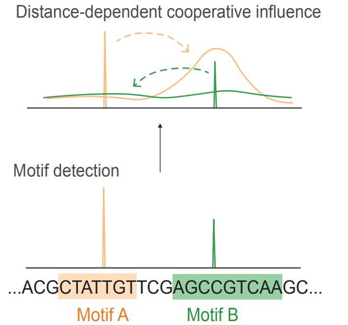
A transparent convolutional neural network that models how transcription factor binding motifs interact across DNA sequences. Unlike black-box deep learning models that require expensive post-hoc analysis, InfluenceNet directly encodes motif influence as a position- and motif-specific profile, providing immediate interpretability while matching state-of-the-art performance.
Paper: InfluenceNet: Encoding Motif Influence for Interpretable Modeling of Cis-Regulatory Syntax
dLEM
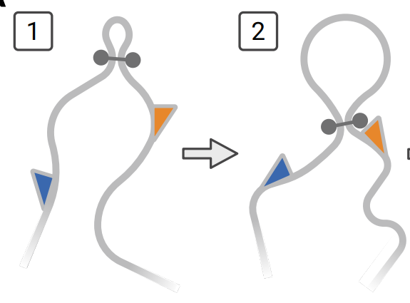
A differentiable framework that fits the loop-extrusion steady state to Hi-C data, enabling compact explanations of observed structures in terms of cohesin translocation rates. Enables seamless integration with other 1D data, global perturbation predictions, and dramatically simplifies sequence to function models of chromatin conformation.
Paper: Mechanistic Genome Folding at Scale through the Differentiable Loop Extrusion Model
MotifDiff
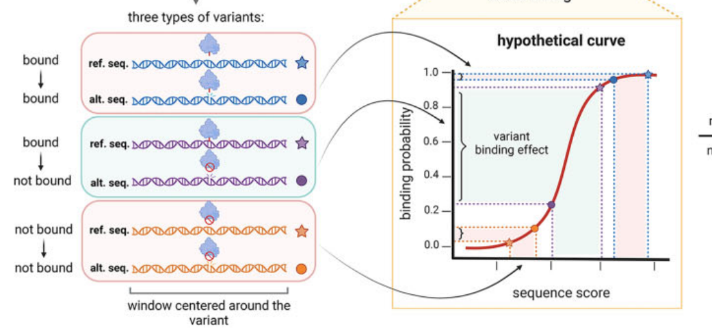
A computational tool that rapidly predicts how genetic variants affect transcription factor binding to DNA. MotifDiff uses biophysical models based on position weight matrices and a novel probability-based normalization strategy to score millions of variants in minutes, providing interpretable, mechanistic insights that address limitations of deep learning approaches on common variants.
Paper: Ultra-fast Variant Effect Prediction Using Biophysical Transcription Factor Binding Models
L0 Segmentation
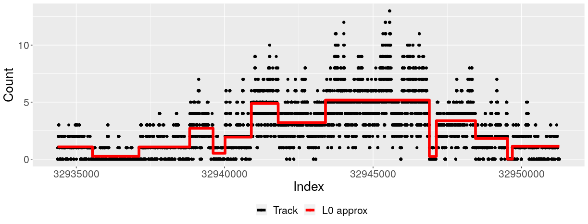
An ultra-fast solution for approximating sequential signals as piecewise-constant segments, enabling compression and denoising of nucleotide-resolution epigenetic data. Unlike fused lasso methods that dampen the global signal, L0 segmentation preserves key biological features and can be integrated into other machine learning models for downstream analysis.
Paper: A unified hypothesis-free feature extraction framework for diverse epigenomic data
PCnt
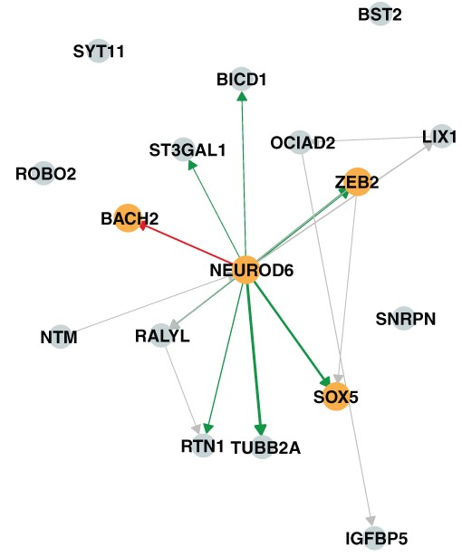
A hybrid method for causal discovery that integrates the PC algorithm's accuracy at estimating causal graph structure with NOTEARS' continuous optimization for quantifying causal effect sizes. PCnt uses PC's output as a constraint within NOTEARS' framework, achieving superior performance on real biological benchmarks including Perturb-seq and eQTL data.
InstaPrism
A fast R package for cell-type deconvolution that replaces BayesPrism's computationally expensive Gibbs sampling with a fixed-point algorithm, producing effectively equivalent results with major speed and memory improvements. Includes precompiled reference datasets for various cancer types to streamline analysis workflows.
Paper: InstaPrism: an R package for fast implementation of BayesPrism
Heterogeneous Bulk RNAseq Simulation
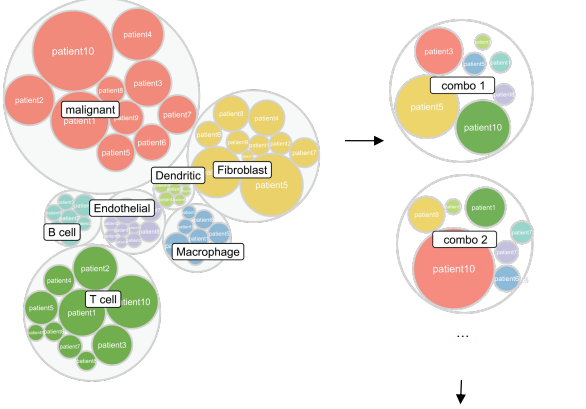
A framework for benchmarking cell-type deconvolution methods using realistic simulated bulk RNA-seq. Standard simulation pipelines randomly sample single cells regardless of intrinsic differences, producing unrealistic variance patterns. This heterogeneous simulation strategy reveals that deconvolution method classes differ dramatically in robustness to cellular heterogeneity, with BayesPrism and hybrid MuSiC/CIBERSORTx approaches performing best.
TISFM: Totally Interpretable Sequence to Function Model
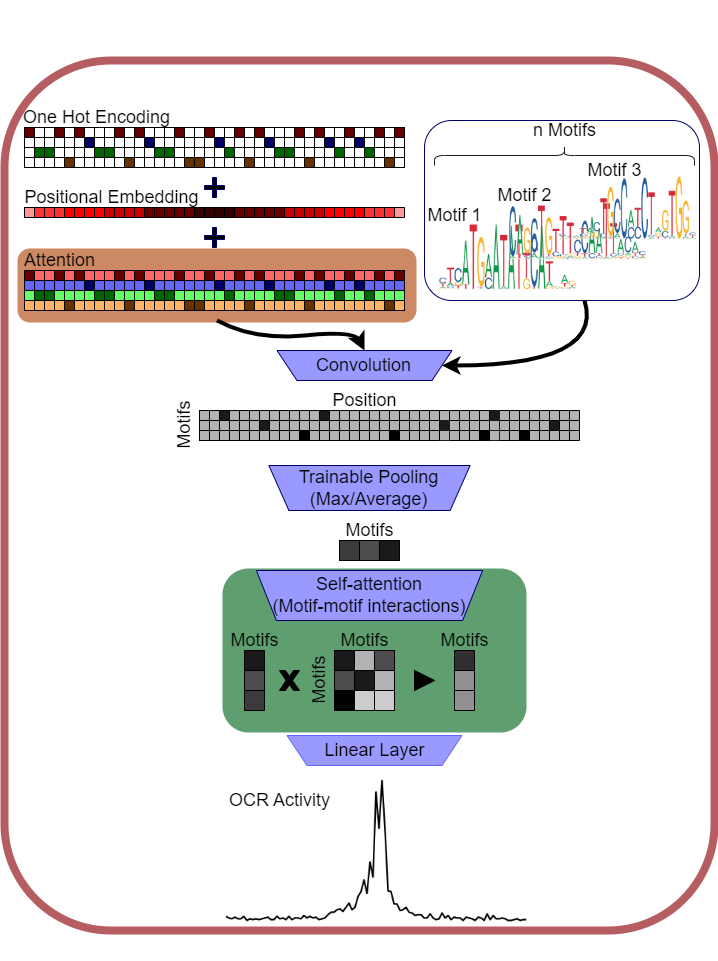
An intrinsically interpretable neural network for predicting genomic function from DNA sequence. Unlike standard deep learning models where interpretability requires expensive post-hoc analysis, TISFM's internal parameters directly correspond to relevant sequence motifs. Tested on open chromatin data across immune cell types, it outperforms standard CNN models while correctly identifying transcription factors with known roles in cell differentiation.
Paper: TISFM: totally interpretable sequence to function model
NIFA: Non-negative Independent Factor Analysis
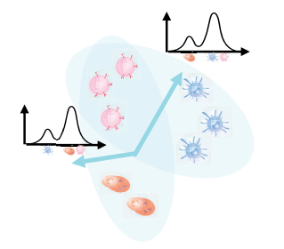
A probabilistic model that simultaneously captures discrete cell-type identity and continuous pathway activity in single-cell RNA-seq data by combining properties of non-negative matrix factorization and independent component analysis. NIFA outperforms ICA, PCA, NMF, and scCoGAPS on benchmarks, and when applied to immunotherapy data, reproduces and refines previous findings while enabling discovery of new clinically relevant cell states.
PLIER: Pathway-Level Information Extractor
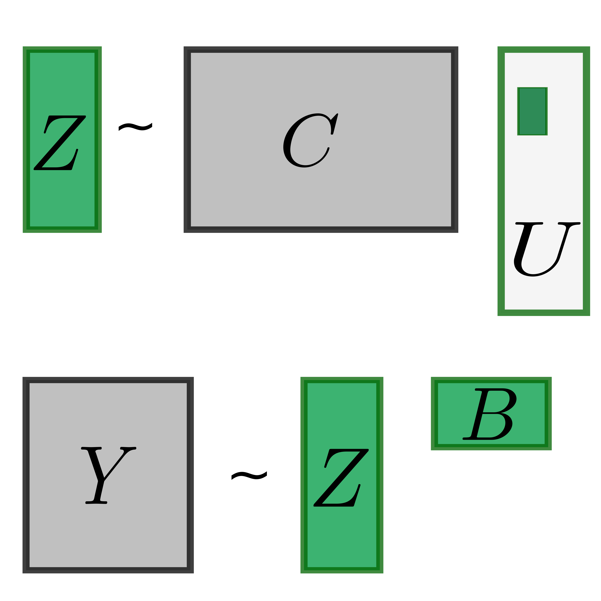
PLIER is a matrix decomposition method that uses prior information from pathway databases to find an interpretable latent variable representation of gene expression datasets.
Paper: Pathway-Level Information ExtractoR (PLIER): a generative model for gene expression data
RERconverge
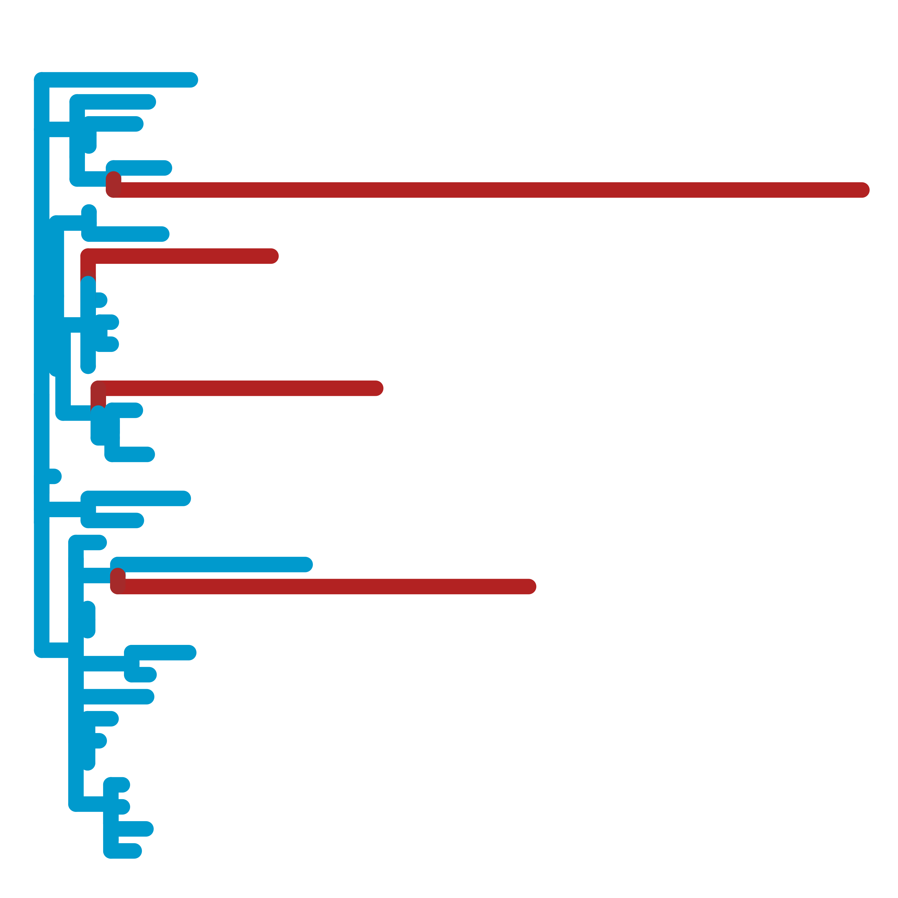
A suite of tools to calculate relative evolutionary rates (RERs) and their associations with phenotypes.
Application papers:
CellCODE
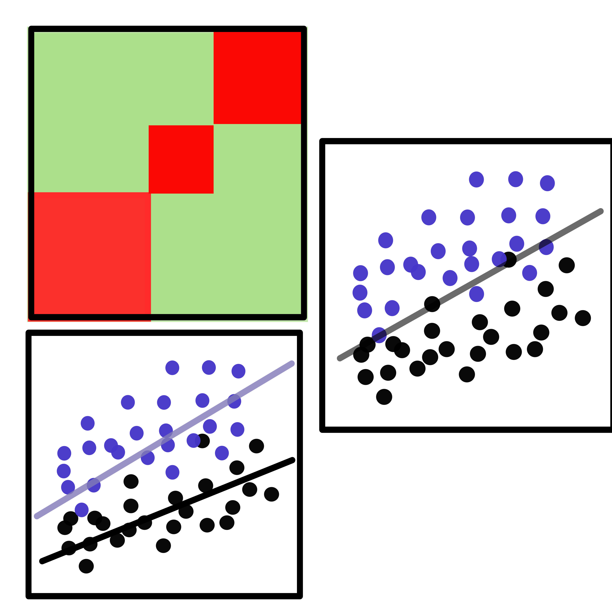
An R package for differential expression analysis that accounts for varying cell-type proportions in heterogeneous tissue samples. CellCODE uses latent variable analysis to estimate surrogate proportion variables from marker genes, then incorporates these into differential expression to improve detection of regulated genes and assign them to their cell type of origin — all without requiring additional experimental data beyond expression measurements.
DataRemix
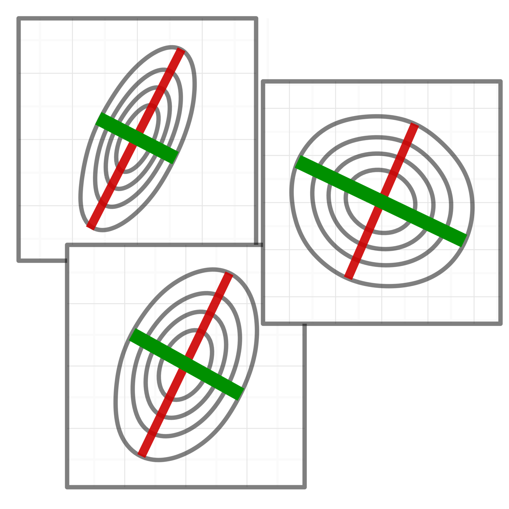
An R package that optimizes a singular value decomposition-based data transformation with three tunable parameters to prioritize biological signals over noise, without requiring external dataset-specific knowledge. DataRemix outperforms standard normalization methods and was used to discover what is believed to be the first replicable trans-eQTL effect in human brain tissue.
IntervalStats
A tool to compute associations between genomic intervals such as peaks for a ChIPseq or ATACseq dataset that uses exact enumeration to compute accurate p-values.
code | Also available as part of the coloc-stats webserver
Paper: An effective statistical evaluation of ChIPseq dataset similarity
EPIANN
An attention-based deep learning model to predict interacting chromosomal regions.